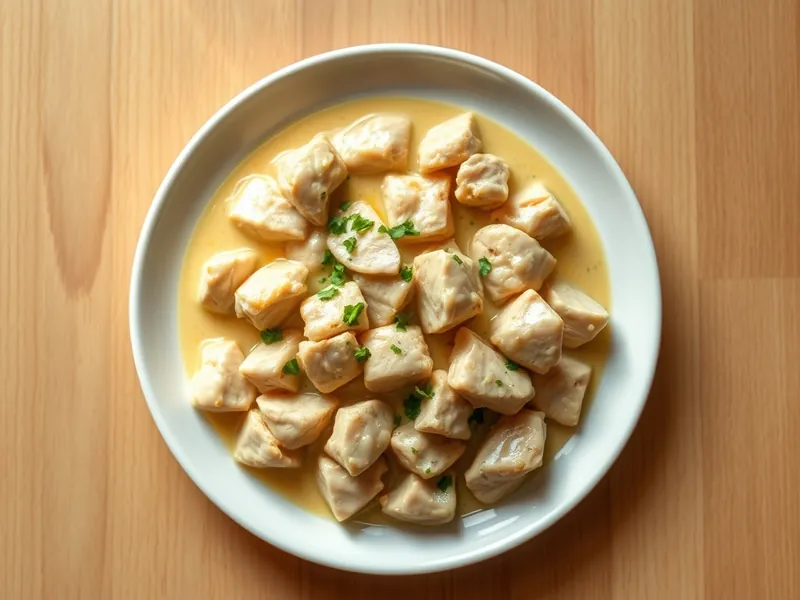

Фото: Иллюстрация ИИ, Cloudflare Workers AI
Индейка в сливочно-горчичном соусе
Кусочки филе индейки, тушённые в сливках с горчицей и чесноком
25 мин3 порц.407 ккал на порциюБ 42 · Ж 24 · У 7Европейская кухня
Продукты на 3 порц.
- Филе индейки500 г
- Сливки 20%1 стак.
- Горчица1 ст. л.
- Лук репчатый1 шт
- Чеснок1 зуб.
- Растительное масло1 ст. л.
- Соль1 ч. л.
- Перец чёрный молотый1 щеп.
- Укроп по желаниюпо вкусу
Как готовить
- Нарежьте индейку кубиками 2 см, лук мелким кубиком, 5 минут.
- Разогрейте масло на сильном огне и обжарьте индейку 6-7 минут, помешивая, до белого цвета и золотистых краёв.
- Добавьте лук и жарьте 3 минуты на среднем огне до мягкости.
- Смешайте сливки с горчицей и раздавленным чесноком, влейте в сковороду, посолите и поперчите.
- Тушите на слабом огне 5 минут, пока соус не загустеет. Посыпьте укропом.
Совет. Возьмите зернистую горчицу вместо обычной: соус будет мягче и красивее. Не кипятите сливки на сильном огне, они могут свернуться.